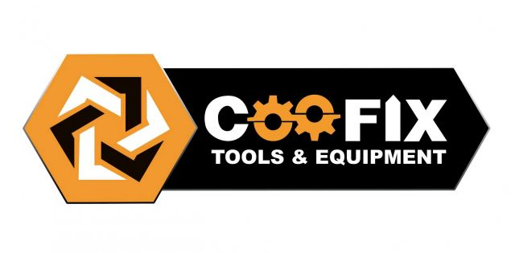

MITEX 2026 · Россия · Стенд 7С1002
COOFIX TOOLS
Карточка проверена 10 ноября 2026, 09:28 · Источник ↗ · Снимок оригинальной карточки ↗
О компании
-
Контакты
Все контактные сведения из карточки
Контакты 140056, Московская область, г. Котельники, Сосновая ул., д. 1 к. 5, помещ. 041 Телефон: +79252862962 E-mail: jason@coofixgroup.com Адрес: 140056, Россия, Московская область, г. Котельники, Сосновая ул., д. 1 к. 5, помещ. 041 Веб-сайт: https://coofix.com/ru E-mail: jason@coofixgroup.com Телефон: +79252862962
Все рубрики участника
Mitex - Рубрикатор
- 1. Электроинструмент и расходные материалы
- 2. Садовая техника, инструмент, инвентарь, оборудование, расходные материалы и насосы
- 3. Сварочное оборудование, расходные материалы, СИЗ
- 4. Инструмент и оборудование для строительно-монтажных, окрасочных и малярных работ
- 5. Слесарный, монтажный, столярный, ручной инструмент
- 6. Инструменты и оборудование для обработки и резки металла, проволоки, труб, камня, стекла, керамики, пластмасс, дерева
- 8. Инструмент и оборудование для автосервиса
- 9. Компрессоры, генераторы, силовая техника
- 14. Гидравлический и пневматический инструмент, аксессуары и расходные материалы
Зал
- Зал № 7
Участник выставки
- MITEX
Фотографии и изображения

Видео, каталоги и документы
В доступной карточке нет видео или документов. Смотрите сайт участника.